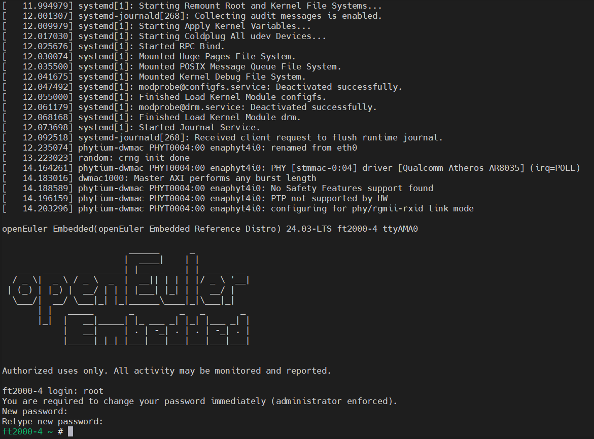

ft2000-4 镜像构建与说明¶
本章主要介绍openEuler Embedded中ft2000-4系列板卡的镜像构建，使用和特性介绍。
ft2000-4板卡支持SATA硬盘/U盘启动(具体根据UEFI提供的设备支持)，构建工程可生成预分区的WIC镜像，对存储介质直接进行烧录即可
镜像构建与使用¶
构建机器和oebuild工具准备：
（1）准备一个 ubuntu x86 构建主机环境（建议22.04，依赖Python>=3.10，配置建议预留200G存储）
（2）安装oebuild（具体 oebuild 用法可参见 安装步骤），注意以普通用户安装oebuild，例：
sudo apt install python3 python3-pip # 如果python3和pip模块已安装，请忽略此python3的安装命令 pip install oebuild
（3）准备 oebuild 的工具依赖（docker）：
sudo apt install docker docker.io -y sudo groupadd docker sudo usermod -a -G docker $(whoami) sudo systemctl-reload && systemctl restart docker sudo chmod o+rw /var/run/docker.sock
oebuild 构建代码准备：
（1）初始化构建分支代码（请不要以root及sudo权限执行）：
oebuild init buildwork # 说明： # * buildwork为存放目录， # * 未使用-b指定分支，默认使用master分支，等同于 oebuild init buildwork -b master # 假设执行路径位于 /home/user/ ，执行后根据提示进入对应目录 cd /home/user/buildwork oebuild update #执行完成后，将在 /home/user/buildwork/src/ 目录下载好主构建源码，并初始化构建虚拟环境。
（2）初始化ft2000-4构建源码及配置：
cd /home/user/buildwork oebuild generate -p ft2000-4 -f systemd # 以上命令可追加-f参数，通过 oebuild generate -l 查看支持的配置，比如-f openeuler-rt开启软实时
镜像构建和部署：
（1）构建ft2000-4镜像：
cd /home/user/buildwork/ft2000-4 oebuild bitbake # oebuild bitbake 执行后将进入构建交互环境 # 注意您此时应该处于进入 oebuild bitbkae 环境的工作根目录(如/home/openeuler/ft2000-4) bitbake openeuler-image
构建完成后，输出件见 /home/user/buildwork/ft2000-4/output/[时间戳]，备用组件内容如下
├── Image ├── openeuler-image-ft2000-4-[时间戳].rootfs.wic └── vmlinuxNote
openeuler-image-ft2000-4-[时间戳].rootfs.wic 已经包含了BootLoader，kernel以及文件系统。
vmlinux为未加工的原始内核基础格式文件。
若需要交叉编译工具链，可通过如下命令生成，将在output目录下有新时间戳子目录得到输出件。
# 注意您此时应该处于进入 oebuild bitbake 环境的工作根目录（如/home/openeuler/ft2000-4） bitbake openeuler-image -c populate_sdk
（2）烧录ft2000-4镜像到SATA硬盘：
烧录ft2000-4镜像仅仅需要将rootfs.wic文件烧录到SD卡中即可，我们将介绍在linux平台下使用dd命令制作镜像方式。
# 使用 df -h 查看挂载点 # u盘去掉挂载。然后可以查看，已经无u盘的挂载: umount /dev/sdb1 # 写入u盘，注意：sdb，没有标号。 sudo dd if=openeuler-image-ft2000-4-[时间戳].rootfs.wic of=/dev/sdb status=progress
（3）启动 ft2000-4 并连接调试：
启用ft2000-4
默认用户名：root，密码：第一次启动没有默认密码，需重新配置，且密码强度有相应要求，需要数字、字母、特殊字符组合最少8位，例如abcd@2024。
将刷写镜像后的SATA硬盘插入主机，通电启用。
ft2000-4登录方式
串口登录：
镜像使能了串口登录功能，通过ttyusb转接器连接板卡对应CPU调试串口，使用串口终端工具连接串口，波特率115200，登录即可。
显示器登录：
部分板卡没有引出CPU调试串口，但往往有附带PCIE显卡并配合efifb提供基本的显示，建议使用显示器登录。
将刷写镜像后的SATA硬盘插入主机，显示器通过VGA/HDMI连接板卡，等待系统启动后即可登录。
